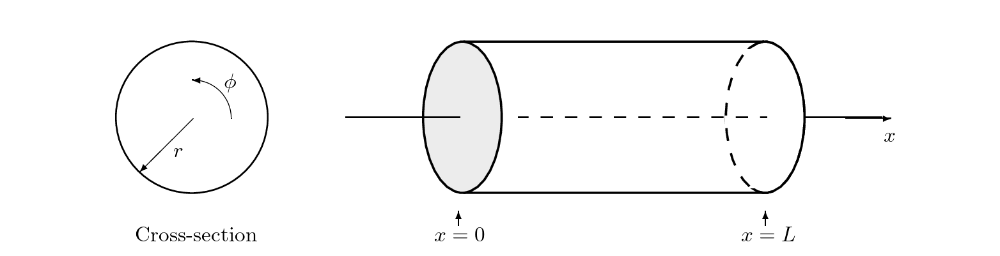
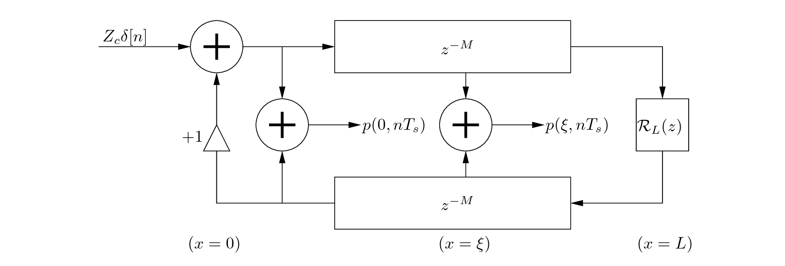
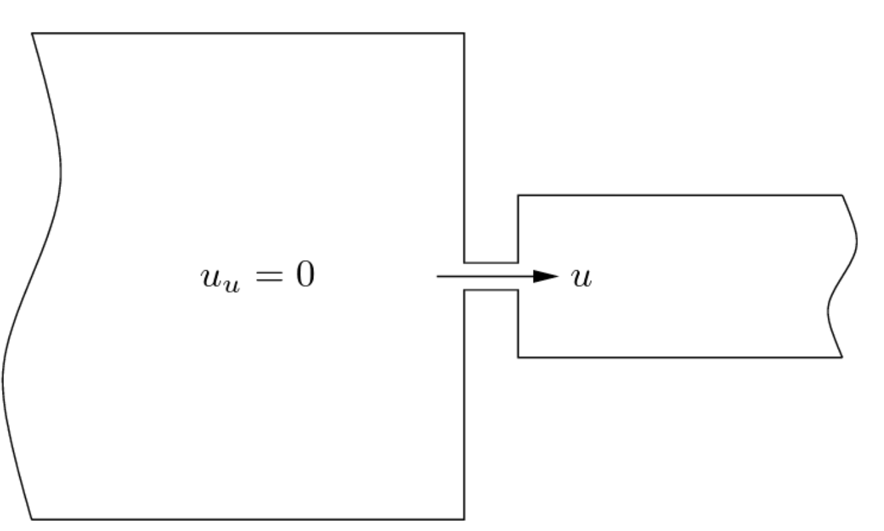
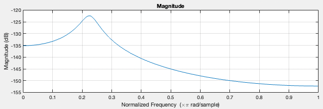
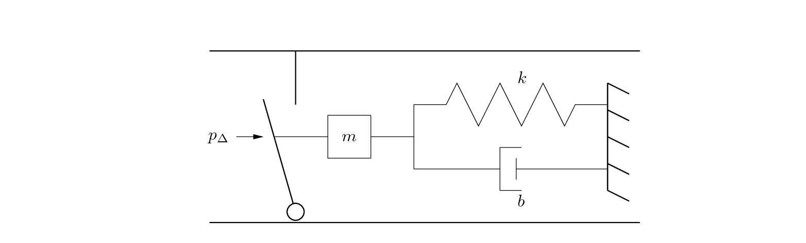

Next: Method Up: Main Previous: Main
The purpose of this project was to learn how to implement a waveguide based clarinet model using methods seen in class. I accomplished my task by implementing the stable reed filter model from week nine coupled with the cylindrical model of week 8. The physical values found in this report were obtained from Guillemain et al. (2005) and Scavone (1997) .
As my main instrument is the clarinet, I wished to learn about the physics involved in its sound generation. Thank to this class and my final project, I was able achieve just that.
Now let's start by going through a quick review of the clarinet modules.

The cylindrical air column is a type of resonator that utilizes its shape as a feedback system to sustain specific frequencies within a sound oscillating through it. By varying its tube length the air column can play different frequencies. The length must not vary the timbre of the sound, in other words the ratio between the $1^{st}$ and consequent harmonics of the sound. The wave propagation within the column is planar, and so can simply be represented by a one dimensional wave equation.

The transverse modes do exist within the waves motion, however the cylindrical bore only weakly excites them. More can be learned about this effect in Gary's thesis paper.
Hence if we are to represent the cylindrical bore as a waveguide model it would look like this:

The two delay lines would represent the wave's motion propagating down the air column and back.
The shorter the length, the shorter the delay line. Once the pressure wave reaches the end of the pipe at $x = L$ , and so we must calculate the reflection coefficient of the sound $R_{L}$ with first or second order filter. Generally, the reflection function is:
Where $Z_{L}$ is the load impedance at the end of the tube and $Z_{c}$ is the characteristic impedance of the cylindrical bore.
The characteristic impedance can be determined by:

Where $P(x,t)$ is the equation of motion of the pressure wave and $U(x,t)$ it's volume flow equivalent. So, we notice that $Z_{c}$ is dependent on the mass density of air $\rho$ speed of sound c and the cross-sectional area of the cylinder.
The Load impedance is determined numerically, however we have some edge cases we can discuss, when the cylinder is an open end, $Z_{L} = 0$ and $R_{L} = - 1$ which means complete reflectance with inversion. When $Z_{L} = \infty$ then $R_{L} = 1$, complete reflection of the wave without inversion.
Once we have determined these values, we can compute the pressure directly at any point in the model. However, to save on computation power we only need to compute the pressure response at the entrance of the air column at $x = 0$ by the introduction of either a unitary pressure impulse at the entrance to the model $\left( Z_{c}\delta\lbrack n\rbrack \right)$ which returns the impulse response $h(t)$ or a continual pressure input from an excitation source like a reed model.
The reed can be considered as a pressure-controlled excitor that inputs an amount of relatively static pressure into the instrument that get converted into acoustic energy within the bore and outputs a sound who's note and timbre is dependent on the dimensions of the pipe.
The flow and reed movement are controlled by the difference in pressures in the mouthpiece and the resulting air columns pressure, $p\Delta = p_{m} - p(0,t)$,
The volume flow $u$ through the reed is derived from the Bernoulli equation,
I we were to assume that there is no change in height within each cavity, $y_{1} = y_{2} = 0$ then,
Then if in the big cavity $u_{u} = 0$ then we can say that it's velocity $v_{1} = 0$ and thus,
And assuming that y is balanced along a point of equilibrium $H$
The reed's motion, represented in the volume flow as $y$, is composed by its interaction with the rest of the instrument by the difference in pressure $p\Delta$ which forces the reed opening either shut or open causing it to oscillate. As such we can view it as a mass spring damper system.

Its system of equation is:
To solve the approximate interaction at the junction between the reed and the instruments air column $p(0,t)$, we must start by solving the mass spring dampers system of equation.
First by first deriving its Laplace transform and then directly applying the bilinear transform, we get
Where $\alpha$ is the bilinear transform's constant.
Now in implementation of the filter model, there is the use of a feed forward coefficient which when fed into the volume flow model would make the reed model non explicit. As a solution we do not need to consider the feedforward values, leaving us with:
Since the zeros are at $z = \pm 1$ as we can see here,

The numerator values only affect the phase offset and the decaying oscillation term and thus we can modify them without affecting the desirable qualities of the filter like its stability or behavior.
Now given that the volume flow solved above does not immediately depend on $p\Delta$, we can create an explicit solution:

If $y + H < 0$ then $u_{0} = 0$.
This has been a summary of the section that compose the clarinet model seen in this paper.

|
|
| Made by Maxwell Gentili-Morin. |